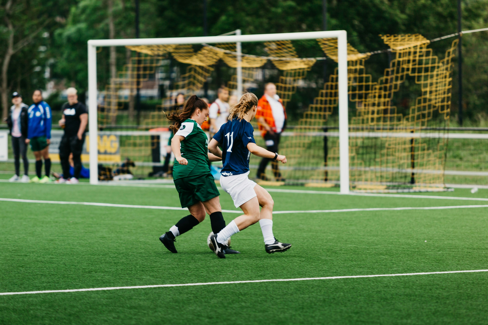
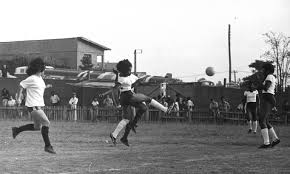
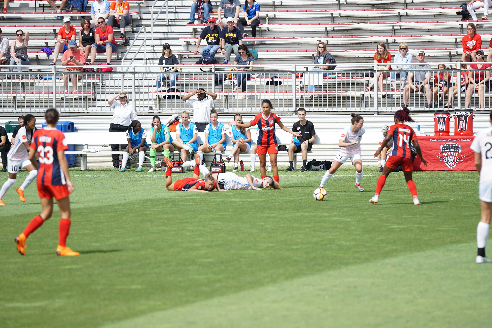
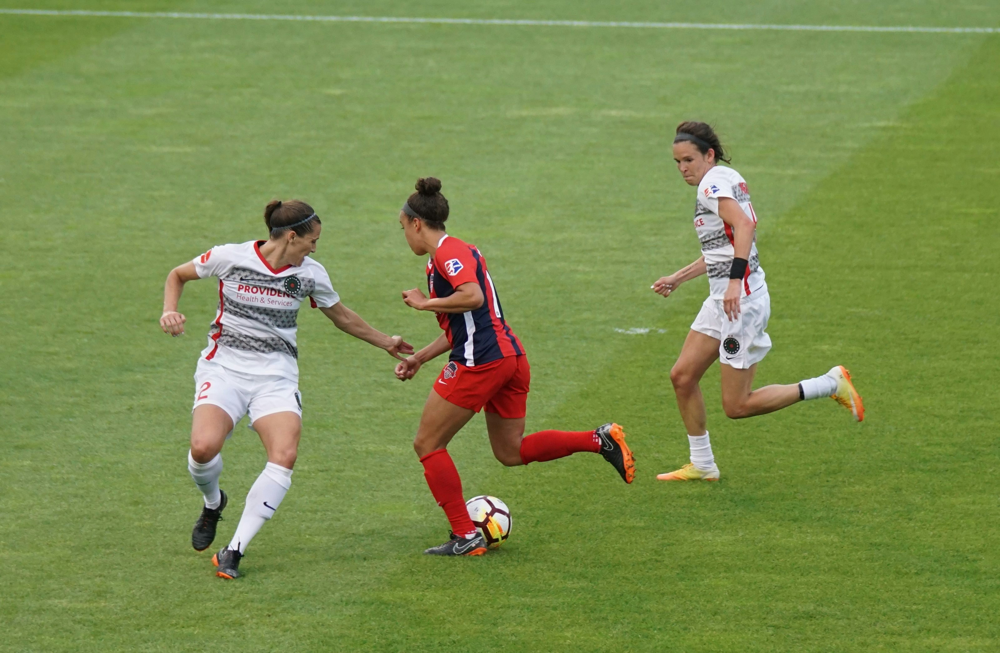
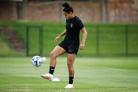

O futebol feminino tem raízes profundas, apesar de ter enfrentado muitos obstáculos ao longo da história.
As primeiras partidas femininas registradas aconteceram no século XIX, mas a prática era vista como algo incomum e, muitas vezes, proibida.
Em diversos países, incluindo o Brasil, o futebol feminino foi proibido por décadas, sendo considerado um esporte "inapropriado" para mulheres.
Mesmo com as proibições, mulheres continuaram a praticar futebol de forma clandestina, demonstrando grande paixão e determinação.

A partir da segunda metade do século XX, o futebol feminino começou a ganhar mais visibilidade e reconhecimento, com a criação de ligas e competições em diversos países.
Apesar dos avanços, o futebol feminino ainda enfrenta desafios como desigualdade de salários, menor investimento e menor visibilidade em comparação ao futebol masculino.
Em resumo, a história do futebol feminino é marcada por lutas, conquistas e a persistência de mulheres que desafiaram os padrões sociais para praticar o esporte que amam.
Hoje, o futebol é um fenômeno global com uma enorme base de fãs. Vários torneios e competições são realizados anualmente, atraindo a atenção de espectadores em todos os continentes. Entre as competições mais famosas do mundo, destacam-se:
As primeiras partidas femininas aconteceram ainda no século XIX, mas muitas vezes eram vistas como algo excêntrico e até mesmo proibido. As mulheres que jogavam futebol eram verdadeiras pioneiras, desafiando os padrões sociais da época.
Em busca de visibilidade, algumas partidas femininas eram realizadas em circos, como uma forma de atrair mais público.
Em diversos países, incluindo o Brasil, o futebol feminino foi proibido por muitos anos. As jogadoras tiveram que lutar incansavelmente para ter o direito de praticar o esporte que amavam.
Marta Vieira da Silva, conhecida como a Rainha, é a maior artilheira da história das Copas do Mundo de Futebol Feminino.
A primeira edição da Copa do Mundo de Futebol Feminino aconteceu em 1991, na China. Os Estados Unidos foram as campeãs.
Apesar dos avanços, as jogadoras de futebol feminino ainda enfrentam desigualdade de salários em relação aos homens, mesmo tendo um desempenho de alto nível.
Nos últimos anos, o futebol feminino tem ganhado cada vez mais visibilidade, com transmissões de jogos, patrocínios e o surgimento de novas ídolas